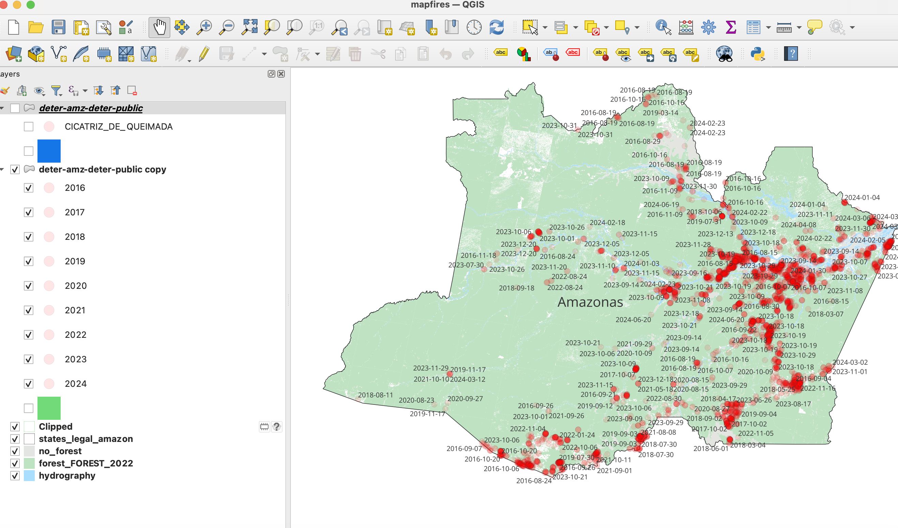

Methodology
The Amazon Faces a New Threat: Fire
The Amazon Faces a New Threat: Fire
I came across the story because my parents, who live in Manaus, sent videos showing the thick fog covering the city. They also showed me pictures of the river, which was unusually dry. They had never seen anything like it. I’ve lived in Manaus for 18 years, and I haven’t either. What struck me as odd was that local reporting focused on how deforestation was down by half, without mentioning any of these alarming signs, including the ones sent through SMS to residents of Manaus alerting the population of poor air quality. Something felt off, so I decided to dig deeper.
Information came from:
Assis, L. F. F. G.; Ferreira, K. R.; Vinhas, L.; Maurano, L.; Almeida, C.; Carvalho, A.; Rodrigues, J.; Maciel, A.; Camargo, C. TerraBrasilis: A Spatial Data Analytics Infrastructure for Large-Scale Thematic Mapping. ISPRS International Journal of Geo-Information. 8, 513, 2019. DOI: 10.3390/ijgi8110513
I downloaded the INPE data from here: terrabrasilis.dpi.inpe.br
Shapefiles for map: terrabrasilis.dpi.inpe.br/downloads
Information for graphs: terrabrasilis.dpi.inpe.br/fires
First, I went to this website. There, I could filter the information I needed based on three panels: “Deforestation Dashboard (PRODES), which presents the annual rates and increases in deforestation in the Legal Amazon and Cerrado; Warning Dashboard (DETER), which shows warnings of evidence of changes in forest cover in the Legal Amazon and Cerrado; and Fire Spots, which lists the hotspots in deforestation areas and on rural properties in the CAR in the Amazon biome.”
I mainly worked with the fire spot data by saving it as a CSV file and uploading it into Google Sheets. This allowed me to create pivot tables, making the information easier to organize, present, and understand.
On the website, to find the information on primary forests, I downloaded the information on this table:
The table shows the subcategories of forest fires deforestation which include recent deforestation, consolidated deforestation, forest fires in primary areas, forest fires in secondary areas and others. When you click on the table on the website, you have the option to download its data. This is what the table looks like when you first download the raw data:
After uploading the data to Google Sheets, I filtered it to display only the "Floresta" category from the downloaded spreadsheet, which corresponds to the "Vegetação primária" classification on the website. To understand the trend, I had to specifically filter out only the primary forest fires from all the categories. This revealed that, despite the overall decline in deforestation and forest fires, the number of forest fires in primary areas had actually tripled. Primary forest fires are a subset of forest fires, which themselves are a subset of deforestation.
For the other tables, I followed the same process, filtering the information as needed by Rural Environmental Registry (CAR), state, type of forest, and other criteria, always downloading the CSV files for further analysis.
Here are the spreadsheet links:
After that, I plugged the spreadsheets on DataWrapper to create easy-to-understand graphs.
To create the maps, I downloaded Shapefiles from here. To build a complete map, I needed to download both the deforestation shapefiles and the supporting shapefiles. The supporting shapefiles provided details like municipality and state boundaries, hydrography, and other features, as shown here:

I used these shapefiles to get the information on locations of forest fires:

These were how all the shapefiles' raw data looked together to create the map:
Once all the shapefiles were downloaded, I filtered the data by the type of deforestation labeled “Cicatriz de Queimada,” which means forest fire scar. This allowed me to pinpoint the locations and dates of where the forest fires occurred.
With that, I could visually track the shift in forest fire locations, as indicated by the graphs. The map allowed me to pinpoint these new areas and observe how they changed over time.
Using both the graphs and maps, I was able to discuss the situation with experts and gain a deeper understanding of how the combination of climate change and human activity has intensified forest fires and contributed to their shifting locations.
The National Institute for Space Research (INPE) is not responsible for enforcing fire laws or punishing offenders. Its main job is to gather and share data on vegetation fires through its Fire Monitoring Program. INPE uses satellite images to detect fires. These images show fire hotspots, indicating fire presence in a specific pixel. Pixel sizes can range from 375 x 375 meters to 5 x 4 kilometers, depending on the satellite. One hotspot can mean multiple fires, and large fires can appear as several hotspots in nearby pixels.
One pixel can contain several fire fronts, so one hotspot might actually be multiple fires. Large fires may be shown as multiple hotspots over several pixels. Different satellites might detect the same fire event throughout the day, but INPE ensures there is no duplicate reporting.
Geographic coordinates of vegetation fire hotspots were extracted from the reference satellite AQUA/MODIS afternoon pass, obtained from the INPE Fire Monitoring Portal.
The term "fire" or "wildfire" can mean different things. For example, a fire burning 10,000 square kilometers over a month and a small fire burning a few hectares in hours both qualify as fire events. Using burnt area extent and the number of detected fire hotspots helps make more consistent comparisons between different fire events, according to INPE.
Accurate fire detection is challenging due to several factors. Fire fronts narrower than 30 meters are hard to spot, and fires that only burn the forest floor can go unnoticed. Cloud cover can hide fires, but smoke does not. Fires that happen between satellite images may be missed, and fires on one side of a mountain may not be visible to satellites on the other side. Additionally, the location of fire hotspots can be off by up to six kilometers.
There is a contact telephone number for residents and riverside communities to report fires, in addition to efforts on the radio networks, local television and blogs, informing residents of the firefighter's contact number, and they call for assistance.
Additionally, platforms such as the Fire Panel, managed by the Amazon Protection System (CENSIPAM), and NASA's FIRMS provide information on fires and burnings in Brazil. These platforms identify fire locations using their geographical coordinates, which are then shared with the state’s firefighting team.
Here is the list in alphabetical order: